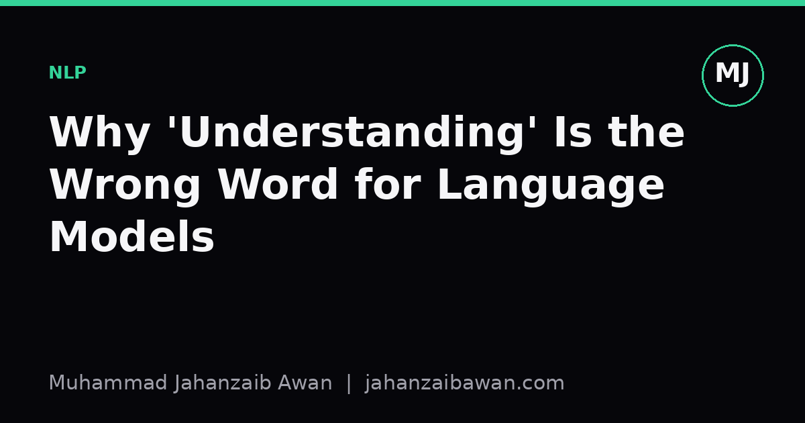

Why 'Understanding' Is the Wrong Word for Language Models
The word we reach for to describe what a language model does smuggles in assumptions it cannot support. A more careful vocabulary makes us better at evaluating these systems.

The word does more work than it should
When a language model answers a question correctly, the natural thing to say is that it 'understood' the question. I use the word myself, casually, because English does not give us a convenient alternative. But the word is doing more work than it has earned. 'Understanding' in ordinary usage implies a grasp of meaning that persists, generalises, and can be checked against a model of the world. None of that is guaranteed by a correct output, and treating the word as a neutral description rather than a claim quietly changes how we evaluate these systems.
The risk is not philosophical squeamishness. It is practical. If I believe a model 'understands' arithmetic because it gets two-digit addition right, I will under-test it on five-digit addition, on addition framed as a word problem, on addition where the numbers are written as words instead of digits. Each of those is a reasonable probe of whether the competence generalises the way human understanding of addition does. A model trained on next-token prediction has no obligation to generalise along the same axes a human would, and plenty of evidence across tasks shows performance dropping sharply once a problem is rephrased in a way that looks trivial to a person but shifts the surface statistics the model relies on.
So the issue is not that 'understanding' is too generous a word in some vague moral sense. It is that it predicts the wrong failure modes. A better description predicts the failure modes we actually see: brittleness under rephrasing, sensitivity to the exact wording of a prompt, strong performance on common patterns and weak performance on rare but structurally identical ones.
A worked example: the word problem that breaks
Consider a model that correctly solves: 'A train travels 60 miles in 2 hours. What is its average speed?' It answers 30 miles per hour, and the answer is right. Now change the surface form without changing the structure: 'A train covers 2 hours' worth of distance, 60 miles total. What speed, on average, did it go?' If the model's accuracy drops noticeably on this rephrasing while a competent student's would not, that gap is the measurement that matters, not the single correct answer on the first phrasing.
This is not a hypothetical concern; it is the standard shape of findings when people construct paired test sets that vary surface form while holding the underlying task constant. The model has learned a strong association between a particular linguistic pattern, the canonical 'distance over time' phrasing, and the correct arithmetic operation. It has not necessarily learned the general relationship between speed, distance, and time in a form that is indifferent to how the sentence is built. Calling the first success 'understanding division of distance by time' overstates what was demonstrated, because the demonstration was narrower than the claim.
The fix in practice is cheap and worth doing as a habit: for any claim of competence, write at least one paraphrase, one distractor variant, and one structurally identical problem in a different domain, and check all three before trusting the first result. If accuracy survives all three, you have genuine evidence of a generalising capability, whatever you choose to call it. If it does not, you have found the actual shape of what was learned, which is more useful than a comforting label.

What to say instead, and why the alternative is more honest
I prefer to describe model behaviour in terms of competence on a defined distribution, because that phrase forces me to say which distribution I mean. 'This model is competent at two-digit arithmetic phrased as a direct equation' is a falsifiable, bounded claim. 'This model understands arithmetic' is not bounded, and it invites exactly the kind of overgeneralised trust that leads to deploying a system in a setting where its actual competence does not reach.
This is also why leakage-aware evaluation matters so much alongside vocabulary. A model can score well on a benchmark not because it has any generalising skill but because near-duplicate examples existed in its training data. The score looks like evidence of understanding; it is actually evidence of memorisation plus retrieval along statistical lines. The only way to tell the difference is to construct held-out variants that are provably novel in structure, not just in surface wording, and to measure the drop-off. A model that keeps its accuracy on genuinely novel structural variants is demonstrating something closer to what people mean by understanding. A model that collapses is demonstrating pattern completion, and the two deserve different names because they warrant different levels of trust.
None of this means the capabilities are not useful, or that we should dismiss what these systems do as 'mere' pattern matching in a sneering way. Statistical pattern completion over enormous data can produce genuinely useful, often impressively robust behaviour across a wide range of everyday tasks. The point is narrower and more technical: using the word 'understanding' collapses a spectrum of possible explanations into one comforting story, and that collapse makes evaluation lazier than it needs to be.
The practical takeaway is simple to apply. Whenever you are tempted to say a model 'understands' something, replace the sentence with a claim about measured competence on a specific, named test distribution, and then ask what rephrasing or structural variant would falsify it. If you cannot name the variant, you have not yet tested the claim; you have only repeated it in different words.